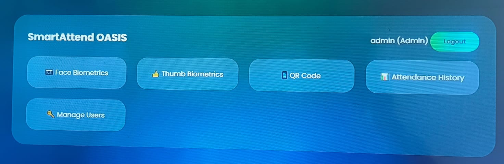

SAM DEV

High-performance software developer inspired by Formula 1.
DRIVER PROFILE
Frontend-focused developer with a strong interest in building interactive, visually polished web experiences.
I enjoy translating ideas into clean, usable interfaces and experimenting with animations, UI feedback, and performance-aware design.
I have hands-on experience with HTML, CSS, JavaScript, and Git through personal projects such as a smart attendance system and interactive dashboards.
Currently improving my JavaScript fundamentals, UI engineering skills, and exploring computer vision concepts as a learning area.
I treat development like a race — iterate fast, learn from mistakes, and improve every lap.
TECH STACK
RACE PROJECT
Smart Attendance System
QR-based attendance with role-based access.
📧 yash@gmail.com
💻 github.com/SAM